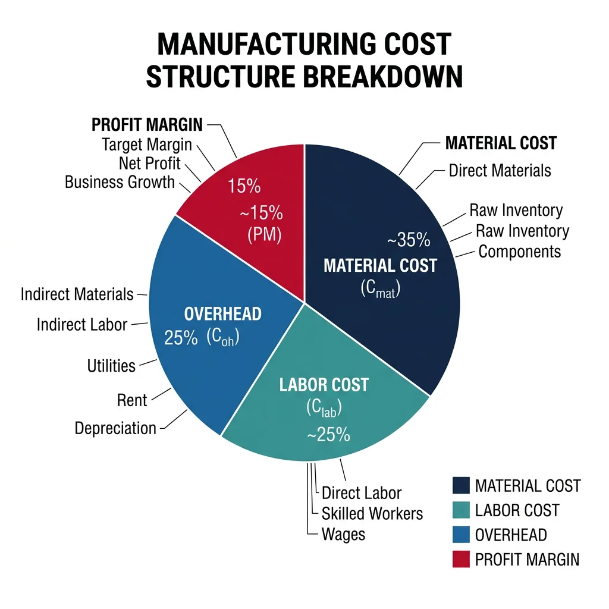
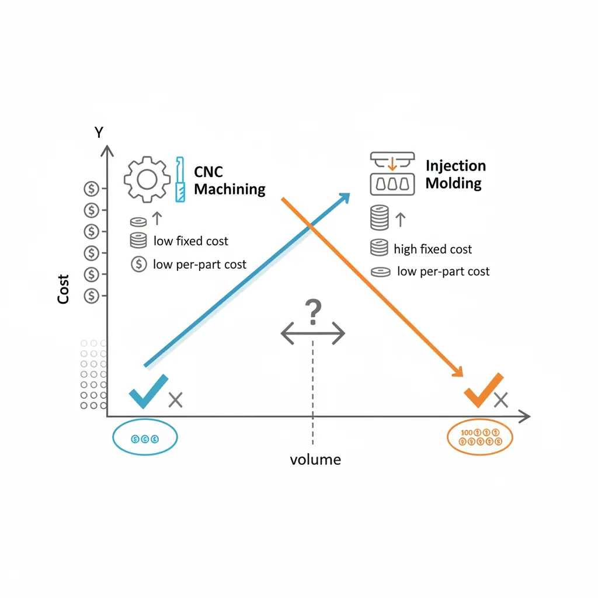
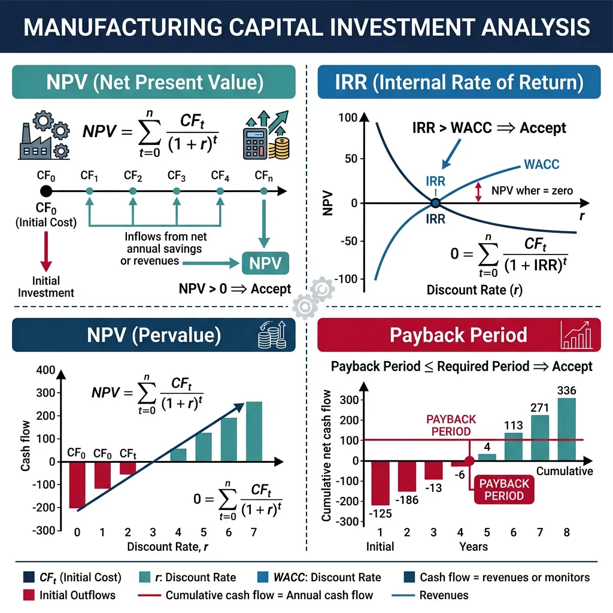
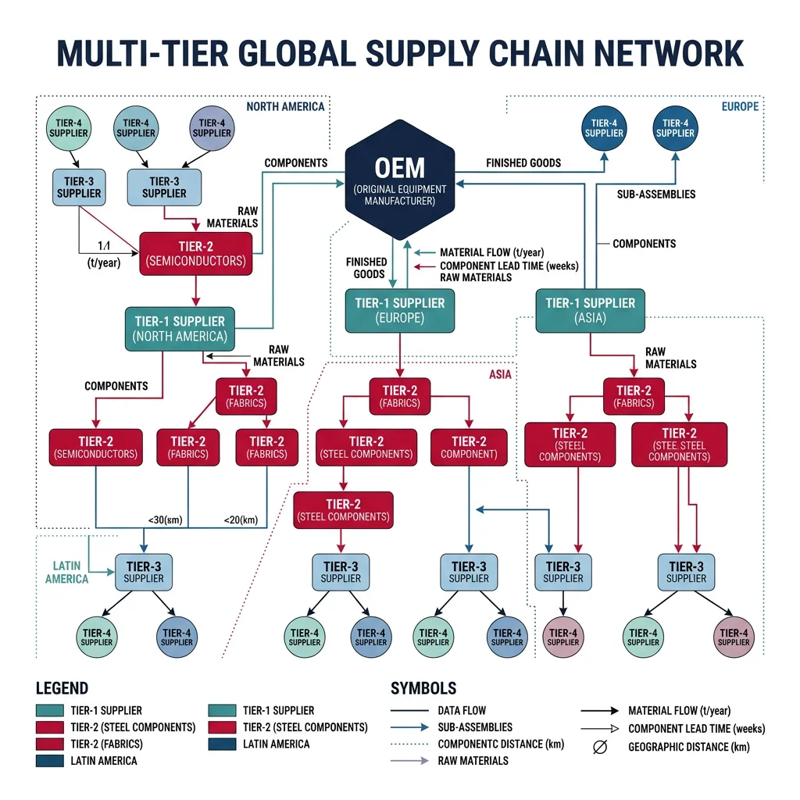
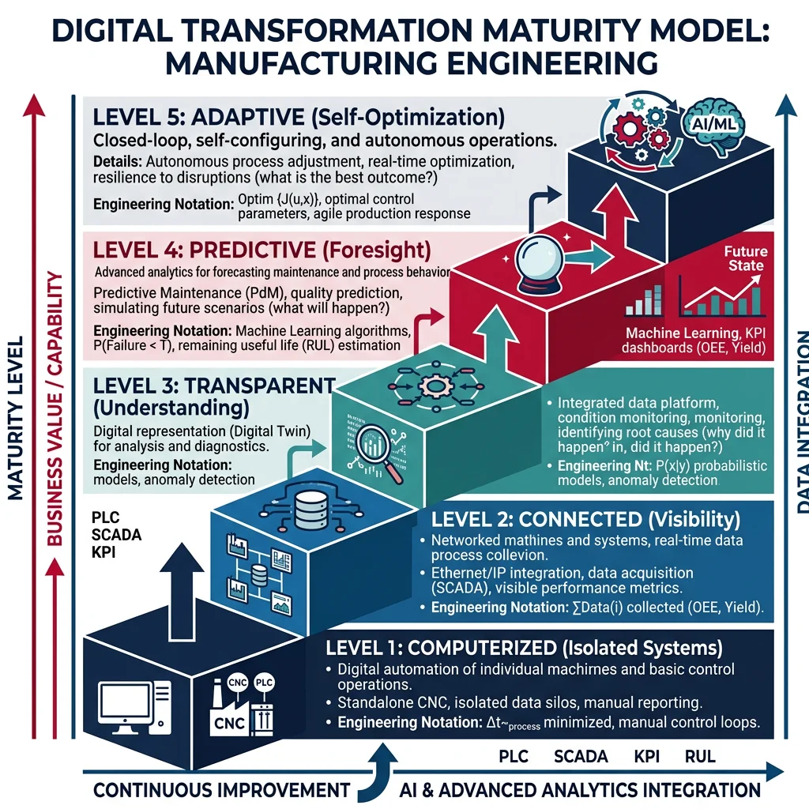

Cost Modeling & Analysis
Manufacturing Mastery
Manufacturing Systems & Process Foundations
Process taxonomy, physics, DFM/DFA, production economics, Theory of ConstraintsCasting, Forging & Metal Forming
Sand/investment/die casting, open/closed-die forging, rolling, extrusion, deep drawingMachining & CNC Technology
Cutting mechanics, tool materials, GD&T, multi-axis machining, high-speed machining, CAMWelding, Joining & Assembly
Arc/MIG/TIG/laser/friction stir welding, brazing, adhesive bonding, weld metallurgyAdditive Manufacturing & Hybrid Processes
PBF, DED, binder jetting, topology optimization, in-situ monitoringQuality Control, Metrology & Inspection
SPC, control charts, CMM, NDT, surface metrology, reliabilityLean Manufacturing & Operational Excellence
5S, Kaizen, VSM, JIT, Kanban, Six Sigma, OEEManufacturing Automation & Robotics
Industrial robotics, PLC, sensors, cobots, vision systems, safetyIndustry 4.0 & Smart Factories
CPS, IIoT, digital twins, predictive maintenance, MES, cloud manufacturingManufacturing Economics & Strategy
Cost modeling, capital investment, facility layout, global supply chainsSustainability & Green Manufacturing
LCA, circular economy, energy efficiency, carbon footprint reductionAdvanced & Frontier Manufacturing
Nano-manufacturing, semiconductor fabrication, bio-manufacturing, autonomous systemsManufacturing cost modeling is the foundation of every production decision — from quoting customer orders to justifying capital investments. Understanding where money goes is essential: in a typical machined part, material is 40-50%, labor 15-25%, overhead (depreciation, energy, maintenance, indirect labor) 25-35%, and profit margin 5-15%.

| Costing Method | How It Works | When to Use | Limitation |
|---|---|---|---|
| Standard Costing | Predetermined rates ($/hour, $/unit) based on budgets | Repetitive production, variance analysis | Inaccurate overhead allocation, cross-subsidization |
| Activity-Based Costing (ABC) | Traces overhead to cost drivers (# setups, machine hours, inspections) | High-mix production, complex products | Expensive to implement, requires detailed tracking |
| Target Costing | Market price - desired profit = allowable cost → design to cost | New product development (Toyota method) | May require radical redesign to hit targets |
| Parametric Costing | Statistical models: Cost = f(weight, complexity, material) | Early-stage estimation, competitive bidding | Accuracy limited by training data |
import numpy as np
# Manufacturing Cost Model — CNC Machined Part
# Full cost breakdown from raw material to shipped part
# Part parameters
part_weight = 2.5 # kg (finished weight)
raw_weight = 4.0 # kg (raw stock — buy-to-fly ratio 1.6:1)
material_cost_per_kg = 8.50 # $/kg (aluminum 6061)
# Processing
setup_time = 0.5 # hours per batch
cycle_time = 0.25 # hours per part (15 minutes)
batch_size = 50 # parts per batch
# Rates
machine_rate = 85.00 # $/hour (CNC center: depreciation + energy + tooling)
labor_rate = 35.00 # $/hour (operator)
overhead_rate = 1.85 # overhead multiplier (185% of direct labor)
# Quality
scrap_rate = 0.02 # 2% scrap
inspection_time = 0.05 # hours per part
# Material cost
material_per_part = raw_weight * material_cost_per_kg
scrap_value = (raw_weight - part_weight) * material_cost_per_kg * 0.20 # 20% scrap recovery
# Processing cost
setup_per_part = (setup_time * (machine_rate + labor_rate)) / batch_size
machining = cycle_time * machine_rate
direct_labor = cycle_time * labor_rate
inspection_cost = inspection_time * labor_rate
overhead = direct_labor * overhead_rate
# Total cost
subtotal = material_per_part - scrap_value + setup_per_part + machining + direct_labor + inspection_cost + overhead
scrap_cost_adder = subtotal * scrap_rate / (1 - scrap_rate)
total_cost = subtotal + scrap_cost_adder
# Pricing
markup = 0.15 # 15% profit margin
selling_price = total_cost / (1 - markup)
print("Manufacturing Cost Model — CNC Aluminum Part")
print("=" * 55)
print(f"\n--- MATERIAL ---")
print(f" Raw material: {raw_weight}kg × ${material_cost_per_kg}/kg = ${material_per_part:.2f}")
print(f" Scrap recovery: {raw_weight-part_weight:.1f}kg chips × 20% = -${scrap_value:.2f}")
print(f" Net material: ${material_per_part - scrap_value:.2f}")
print(f"\n--- PROCESSING ---")
print(f" Setup (per part): ${setup_per_part:.2f} ({setup_time}h ÷ {batch_size} parts)")
print(f" Machine time: ${machining:.2f} ({cycle_time}h × ${machine_rate}/h)")
print(f" Direct labor: ${direct_labor:.2f} ({cycle_time}h × ${labor_rate}/h)")
print(f" Inspection: ${inspection_cost:.2f}")
print(f"\n--- OVERHEAD ---")
print(f" Factory overhead: ${overhead:.2f} ({overhead_rate*100:.0f}% of labor)")
print(f"\n--- TOTALS ---")
print(f" Subtotal: ${subtotal:.2f}")
print(f" Scrap adder ({scrap_rate*100:.0f}%): ${scrap_cost_adder:.2f}")
print(f" Total cost: ${total_cost:.2f}")
print(f" Selling price: ${selling_price:.2f} ({markup*100:.0f}% margin)")
print(f"\n Cost breakdown: Material {(material_per_part-scrap_value)/total_cost*100:.0f}% | "
f"Processing {(setup_per_part+machining+direct_labor+inspection_cost)/total_cost*100:.0f}% | "
f"Overhead {overhead/total_cost*100:.0f}%")
Break-Even & Margin Analysis
Break-even analysis determines the production volume at which total revenue equals total cost — the point where a product line starts generating profit. This is critical for process selection decisions: CNC machining has low fixed costs but high per-part costs; injection molding has high fixed costs (mold tooling) but very low per-part costs.

import numpy as np
# Break-Even Analysis — CNC Machining vs Injection Molding
# Determines which process is more economical at different volumes
# CNC Machining
cnc_fixed = 2_000 # $ setup, programming, fixturing
cnc_variable = 22.50 # $ per part (material + machining + labor)
# Injection Molding
mold_fixed = 45_000 # $ mold tooling investment
molding_variable = 1.80 # $ per part (material + machine + labor)
# Break-even quantity
breakeven_qty = (mold_fixed - cnc_fixed) / (cnc_variable - molding_variable)
# Cost comparison at various volumes
volumes = [100, 500, 1000, 2000, 5000, 10000, 50000]
print("Break-Even Analysis: CNC Machining vs Injection Molding")
print("=" * 65)
print(f"CNC: Fixed = ${cnc_fixed:,.0f}, Variable = ${cnc_variable:.2f}/part")
print(f"Molding: Fixed = ${mold_fixed:,.0f}, Variable = ${molding_variable:.2f}/part")
print(f"Break-even quantity: {breakeven_qty:,.0f} parts")
print(f"\n{'Volume':<10} {'CNC Cost':<14} {'Mold Cost':<14} {'Winner':<12} {'Savings'}")
print("-" * 60)
for v in volumes:
cnc_total = cnc_fixed + cnc_variable * v
mold_total = mold_fixed + molding_variable * v
winner = "CNC" if cnc_total < mold_total else "Molding"
savings = abs(cnc_total - mold_total)
print(f"{v:<10,} ${cnc_total:<13,.0f} ${mold_total:<13,.0f} {winner:<12} ${savings:,.0f}")
print(f"\nDecision Rule:")
print(f" Volume < {int(breakeven_qty):,} → use CNC Machining")
print(f" Volume > {int(breakeven_qty):,} → invest in Injection Molding")
Make vs Buy Decisions
The make-vs-buy decision determines whether to manufacture a component in-house or purchase it from an external supplier. The decision goes far beyond simple cost comparison — it involves strategic considerations of core competency, quality control, lead time, intellectual property, and supply risk.
| Factor | Favors MAKE | Favors BUY |
|---|---|---|
| Core competency | Part differentiates the product | Commodity component widely available |
| Quality control | Need tight process control, proprietary methods | Suppliers have proven quality systems |
| Volume | High volume justifies dedicated capacity | Low volume — supplier's economy of scale |
| IP protection | Design secrets must stay in-house | No risk of IP leakage |
| Capacity | Have idle capacity to absorb fixed costs | Would require new capital investment |
| Supply risk | Single-source supplier risk unacceptable | Multiple qualified suppliers available |
Capital Investment & ROI
Manufacturing capital decisions — buying a new CNC center ($500K), building a robotic welding cell ($1.2M), or constructing a new factory ($50M) — require rigorous financial analysis. The three essential metrics: NPV (most theoretically sound), IRR (most intuitive for executives), and Payback Period (simplest risk indicator).

import numpy as np
# Capital Investment Analysis — Robotic Welding Cell
# NPV, IRR, and Payback Period
initial_investment = 850_000 # $ total (robot + fixtures + integration)
annual_savings = 220_000 # $ labor savings + quality improvement + productivity
annual_maintenance = 35_000 # $ robot maintenance, consumables
project_life = 8 # years
discount_rate = 0.10 # 10% WACC (weighted avg cost of capital)
salvage_value = 85_000 # $ end-of-life value
# Net annual cash flow
net_annual = annual_savings - annual_maintenance
# NPV calculation
years = np.arange(1, project_life + 1)
discounted_flows = net_annual / (1 + discount_rate)**years
discounted_salvage = salvage_value / (1 + discount_rate)**project_life
npv = -initial_investment + np.sum(discounted_flows) + discounted_salvage
# Payback period
cumulative = np.cumsum(np.full(project_life, net_annual))
payback_idx = np.searchsorted(cumulative, initial_investment)
payback_years = initial_investment / net_annual
# IRR (find rate where NPV = 0)
cash_flows = [-initial_investment] + [net_annual]*(project_life-1) + [net_annual + salvage_value]
irr = np.irr(cash_flows) if hasattr(np, 'irr') else None
# Manual IRR approximation using bisection
low, high = 0.0, 0.50
for _ in range(100):
mid = (low + high) / 2
trial_npv = -initial_investment + sum(
net_annual / (1 + mid)**y for y in range(1, project_life + 1)
) + salvage_value / (1 + mid)**project_life
if trial_npv > 0:
low = mid
else:
high = mid
irr_approx = (low + high) / 2
print("Capital Investment Analysis — Robotic Welding Cell")
print("=" * 55)
print(f"\nInvestment: ${initial_investment:>12,.0f}")
print(f"Annual savings: ${annual_savings:>12,.0f}")
print(f"Annual maintenance: ${annual_maintenance:>12,.0f}")
print(f"Net annual benefit: ${net_annual:>12,.0f}")
print(f"Project life: {project_life} years")
print(f"Discount rate: {discount_rate*100:.0f}% (WACC)")
print(f"Salvage value: ${salvage_value:>12,.0f}")
print(f"\n--- RESULTS ---")
print(f"NPV: ${npv:>12,.0f} {'✓ ACCEPT' if npv > 0 else '✗ REJECT'} (NPV > 0)")
print(f"IRR: {irr_approx*100:>11.1f}% {'✓ ACCEPT' if irr_approx > discount_rate else '✗ REJECT'} (IRR > {discount_rate*100:.0f}%)")
print(f"Payback Period: {payback_years:>11.1f} years")
print(f"\nYear-by-Year Cash Flow:")
print(f"{'Year':<6} {'Cash Flow':<14} {'Cumulative':<14} {'Discounted'}")
cumul = -initial_investment
print(f"{'0':<6} ${-initial_investment:<13,.0f} ${cumul:<13,.0f} ${-initial_investment:,.0f}")
for y in range(1, project_life + 1):
cf = net_annual + (salvage_value if y == project_life else 0)
cumul += cf
dcf = cf / (1 + discount_rate)**y
print(f"{y:<6} ${cf:<13,.0f} ${cumul:<13,.0f} ${dcf:,.0f}")
Automation Investment ROI
Automation ROI calculations must account for tangible benefits (labor reduction, throughput increase, scrap reduction) AND intangible benefits (quality consistency, flexibility, safety improvement, competitive positioning). Many automation projects fail financially because only direct labor savings are counted:
Facility Layout Optimization
Facility layout determines material flow efficiency, labor productivity, and manufacturing flexibility. Poor layout causes excessive material handling (25-50% of manufacturing cost in some facilities), long lead times, and ergonomic hazards.
| Layout Type | Description | Best For | Material Flow |
|---|---|---|---|
| Process (Functional) | Similar machines grouped together | Job shop, high mix, low volume | Complex, variable path — long distances |
| Product (Line) | Equipment arranged in production sequence | Mass production, high volume | Linear, one-directional — short, efficient |
| Cellular | Machines grouped by product family | Group technology, lean manufacturing | U-shaped, compact — minimal handling |
| Fixed Position | Product stays stationary; equipment comes to it | Large/heavy products (ships, aircraft) | Materials converge to one point |
Global Supply Chains
Manufacturing supply chains span the globe — a typical automotive OEM has 5,000-10,000 tier-1 through tier-4 suppliers across 30+ countries. Supply chain design decisions (where to source, where to manufacture, where to warehouse) are among the most consequential strategic choices a manufacturer makes.

Case Study: Toyota's Supply Chain — The Benchmark
Toyota's keiretsu supply chain model combines close supplier relationships with JIT delivery:
- Supplier proximity: 80% of Toyota's tier-1 suppliers are within 200 km of assembly plants — enabling JIT deliveries 4-12 times daily
- Deep relationships: Average supplier tenure >20 years; Toyota takes equity stakes in key suppliers; joint engineering teams co-develop components
- Risk response: After the 2011 Tōhoku earthquake, Toyota accelerated dual-sourcing and created a "rescue network" — suppliers from unaffected regions ramp up within 2 weeks
- Inventory: 2-4 hours of parts on the assembly line (vs industry average of 2-5 days). This requires 99.99% supplier delivery reliability.
Reshoring vs Outsourcing
The post-COVID era has accelerated reshoring — bringing manufacturing back from low-cost countries to domestic or near-shore locations. The total cost of offshoring often exceeds initial savings when hidden costs are included:
| Factor | Offshoring Advantage | Hidden Cost |
|---|---|---|
| Labor | 60-80% lower wages | Productivity gap (50-70% efficiency), training, turnover |
| Logistics | Large lot shipping is cheap | 6-12 week ocean transit, port delays, customs, inventory carrying cost |
| Quality | Lower inspection labor | Higher defect rates, travel for audits, warranty costs, brand risk |
| IP risk | — | Counterfeiting, reverse engineering, weak IP enforcement |
| Agility | — | 12-week MOQ (minimum order quantity), no design iteration flexibility |
| Geopolitics | — | Tariffs (25%+ on many categories), sanctions risk, currency fluctuation |
Supply Chain Risk & Resilience
Supply chain resilience is the ability to anticipate, prepare for, respond to, and recover from disruptions. The COVID-19 pandemic, Suez Canal blockage, semiconductor shortage, and geopolitical conflicts exposed the fragility of optimized-for-efficiency supply chains.
Strategy & Transformation
Digital transformation in manufacturing is not just implementing technology — it's fundamentally rethinking how a company creates and delivers value through digital capabilities. McKinsey reports that manufacturers who successfully digitize achieve 30-50% reduction in downtime, 15-30% increase in labor productivity, and 10-30% improvement in throughput.

| Maturity Level | Characteristics | Technologies | % of Companies |
|---|---|---|---|
| Level 1: Computerized | Basic automation, standalone systems | PLCs, CAD, standalone CNC | ~20% |
| Level 2: Connected | Systems networked, data collected | MES, ERP, SCADA integration | ~35% |
| Level 3: Visible | Real-time dashboards, digital shadow | IIoT, cloud, real-time analytics | ~25% |
| Level 4: Transparent | Root cause analysis, digital twin | ML, predictive analytics, simulation | ~15% |
| Level 5: Predictive/Adaptive | Self-optimizing, autonomous decisions | AI, reinforcement learning, autonomous systems | ~5% |
Competitive Manufacturing Strategy
Manufacturing strategy defines how production capabilities support business strategy. A company must choose which competitive priorities to emphasize — it's impossible to be the best at everything simultaneously (the "sand cone" model suggests building from quality → delivery → flexibility → cost).
| Competitive Priority | Manufacturing Focus | Example Company |
|---|---|---|
| Cost leadership | High volume, process optimization, automation, low-cost sourcing | Foxconn (electronics), TSMC (semicon) |
| Quality | Six Sigma, precision processes, testing/inspection, certification | Rolls-Royce (aerospace), Trumpf (laser) |
| Delivery speed | Lead time compression, JIT, quick changeover, standard designs | Protolabs (rapid prototyping) |
| Flexibility | Modular production, cross-trained workers, cellular layout | Tesla (rapid iteration), Zara (fast fashion) |
| Innovation | R&D integration, advanced materials, AM/hybrid processes | SpaceX, Apple, GE Additive |
Workforce & Skills Planning
The manufacturing skills gap is one of the industry's greatest challenges: Deloitte and Manufacturing Institute estimate 2.1 million manufacturing jobs will go unfilled by 2030 in the US alone. The convergence of retiring baby boomers, Industry 4.0 skill requirements, and perception challenges creates an urgent talent crisis.